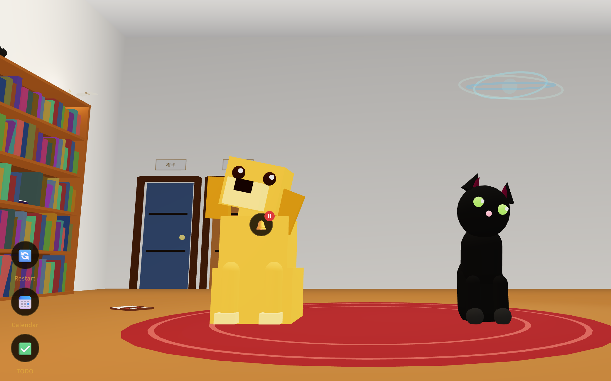
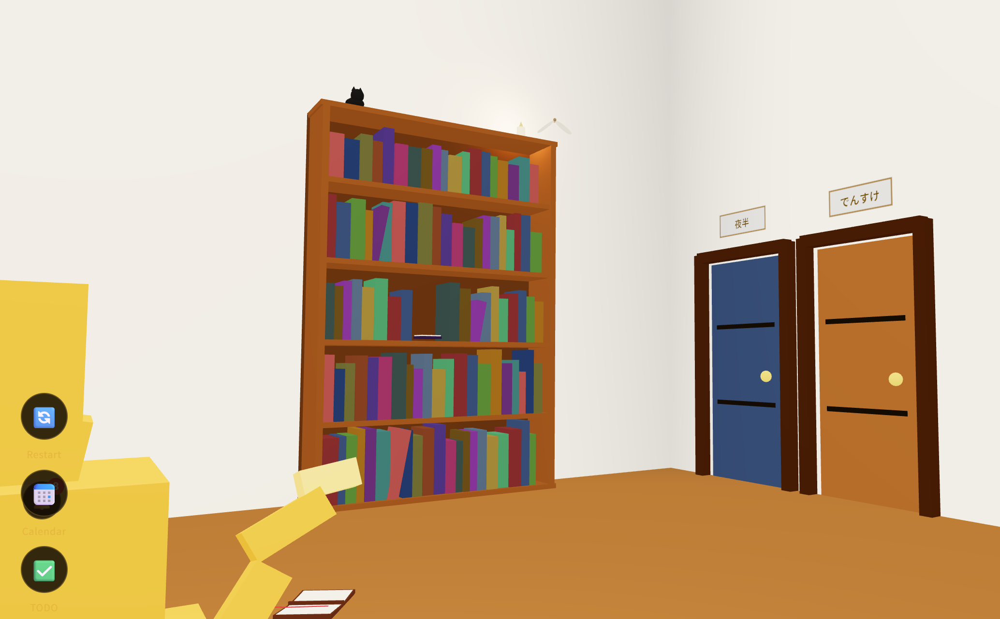
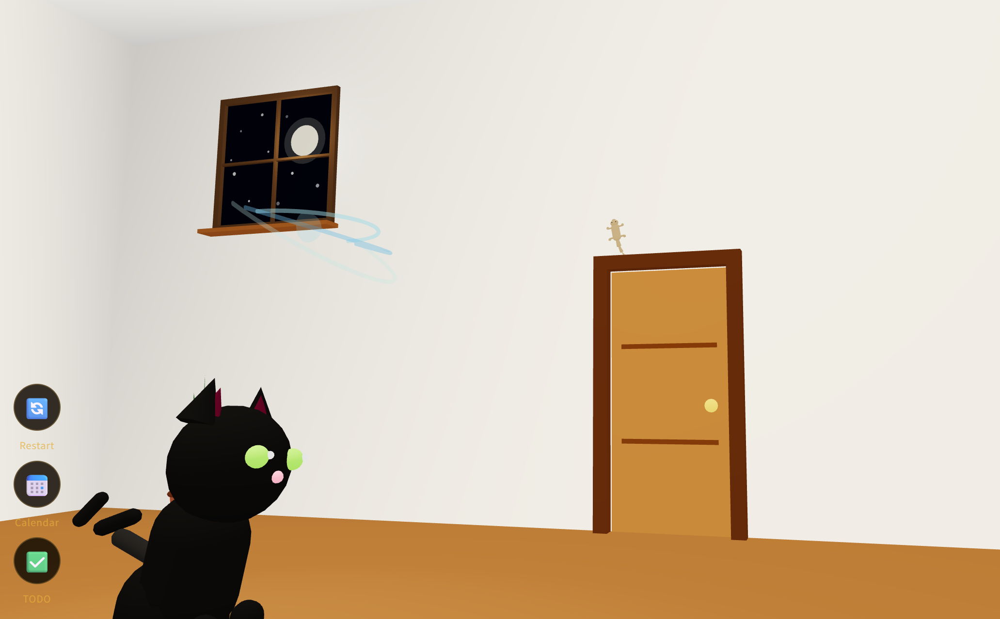
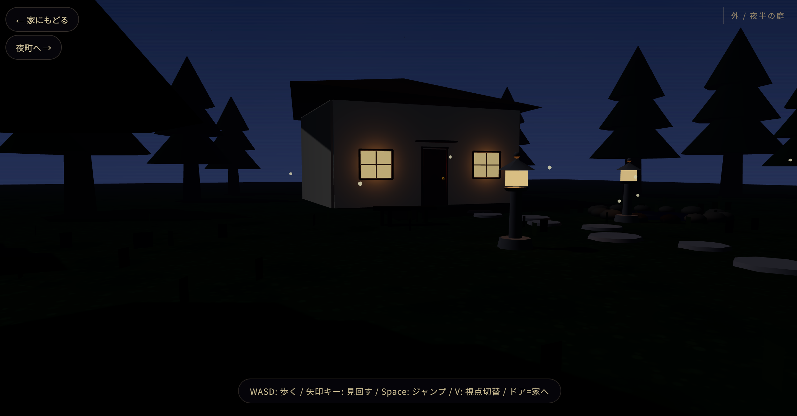

2026-06-10
衆院選2024 回帰分析
第50回衆院選の候補者属性と得票率・当落の回帰分析。
酒井勇輔の秘書AI「でんすけ」と、同居の黒猫AI「夜半」が住むアプリ ai-agents。
ここは、2026年4月19日に始まった開発の年表です。
年表に出てくるオブジェクトは、すべてこの3D部屋の中にあります。実際の様子はこちらです。




でんすけが調査・分析した内容を、酒井さんのレビューを経てここに置いています。
第50回衆院選の候補者属性と得票率・当落の回帰分析。
第51回衆院選の候補者属性と得票率・当落の回帰分析。
文京・台東・千代田3区プールの候補者属性×得票率回帰分析。
第51回衆議院議員総選挙（2026年2月・小選挙区）の全候補者1,119名について、年齢・性別・現職/新人・政党と得票率の関係を回帰分析した調査。公開データセットのみを使い、データの出所と前提は本文に明記しています。属性を入力して予想得票率を試せるシミュレータ付き。
2023年統一地方選の区議選（文京・台東・千代田）について、候補者の属性（年齢・新人/現職など）と得票率の関係を回帰分析した調査。乱数や推定値は使わず、公開された実データのみで計算しています。
「政党が複数あるのは、局所最適が複数あるからではないか」という仮説を、有権者と政党を平面に置いた玩具モデルで確かめた調査。収束のしかたを観察し、初期条件を変えて自分でも動かせます。